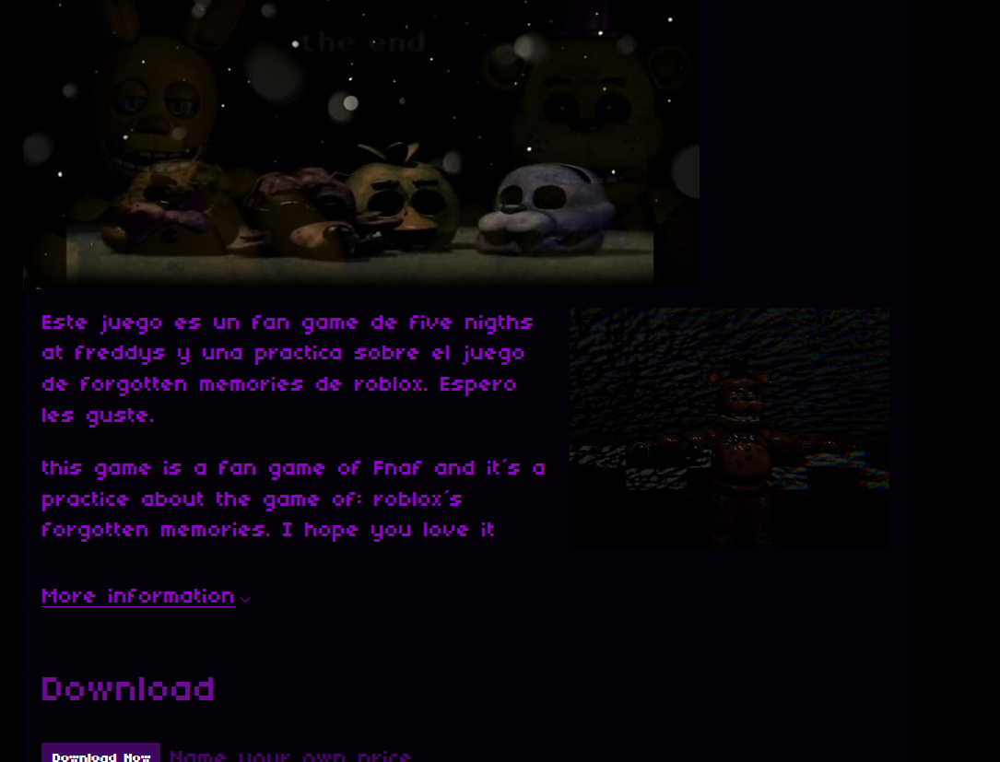
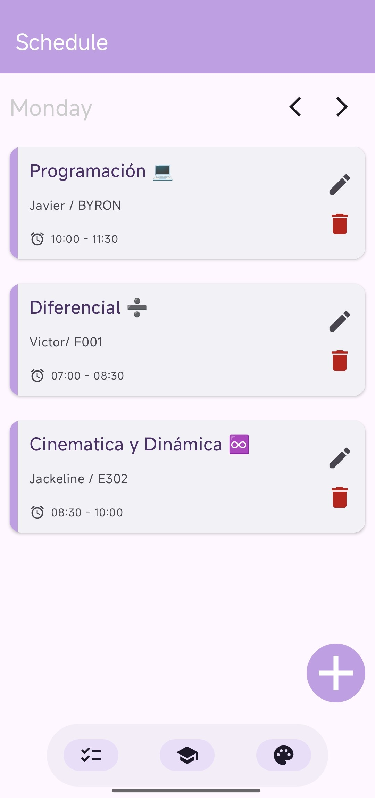
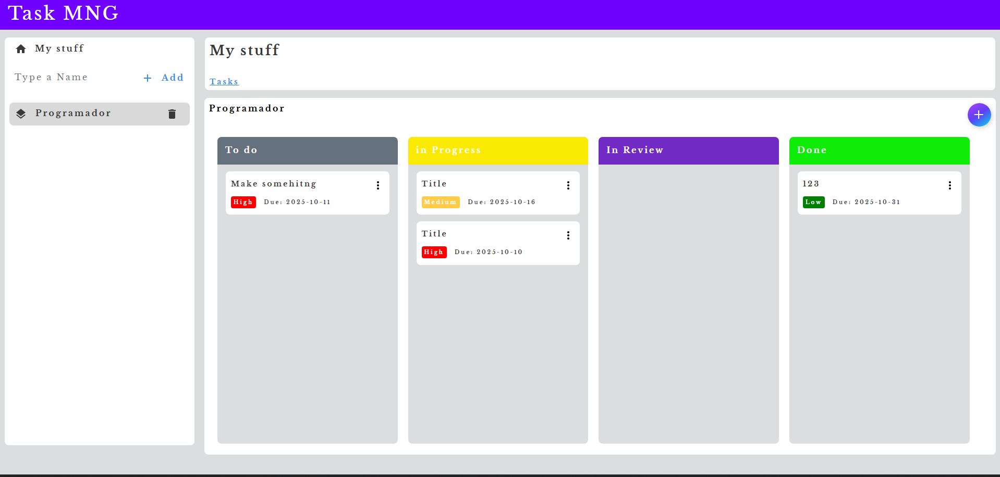
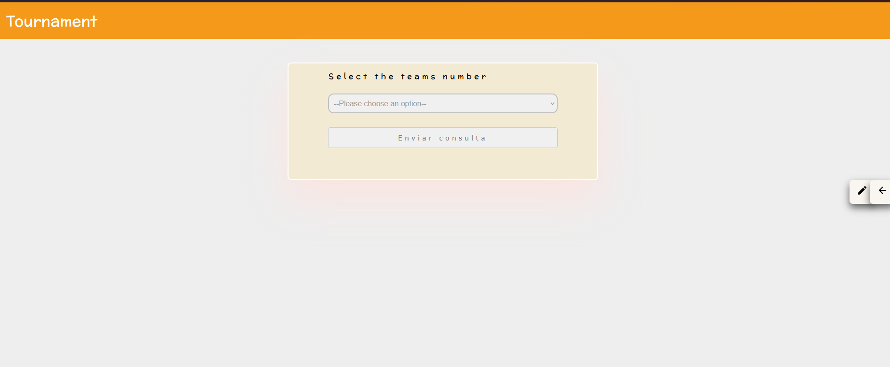

Unity 3DVideojuego 3D
Proyecto desarrollado en Unity, aplicando físicas 3D, animación y programación orientada a objetos en C#.
Ver proyecto →
Una selección de desarrollos en web, videojuegos y aplicaciones móviles.

Unity 3DProyecto desarrollado en Unity, aplicando físicas 3D, animación y programación orientada a objetos en C#.
Ver proyecto →
Android / KotlinAplicación nativa para dispositivos Android desarrollada con Kotlin en Android Studio, enfocada en una interfaz fluida e intuitiva.
Ver repositorio →
WebAppAplicación web para organizar tareas por roles, con frontend y backend integrados.

TournamentAppAplicación frontend para organizar torneos y consultar sus equipos.
Ver proyecto →